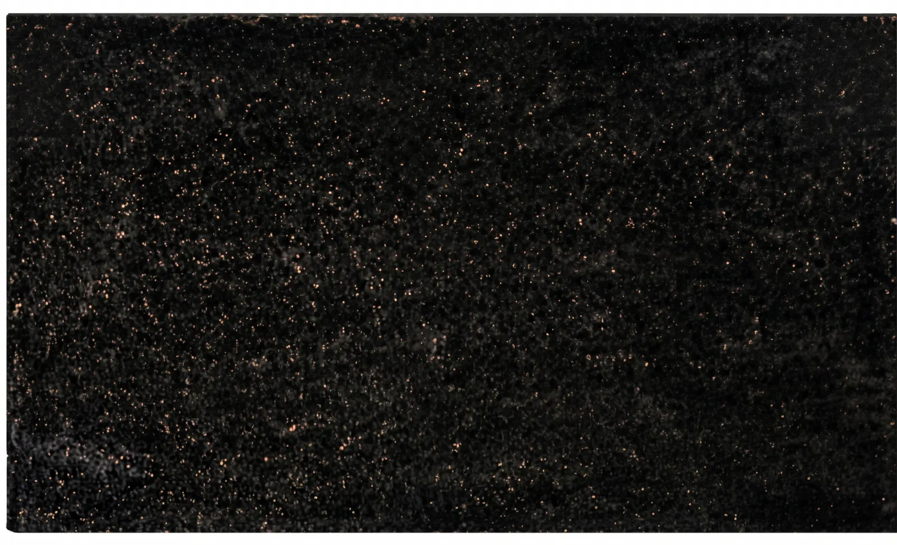
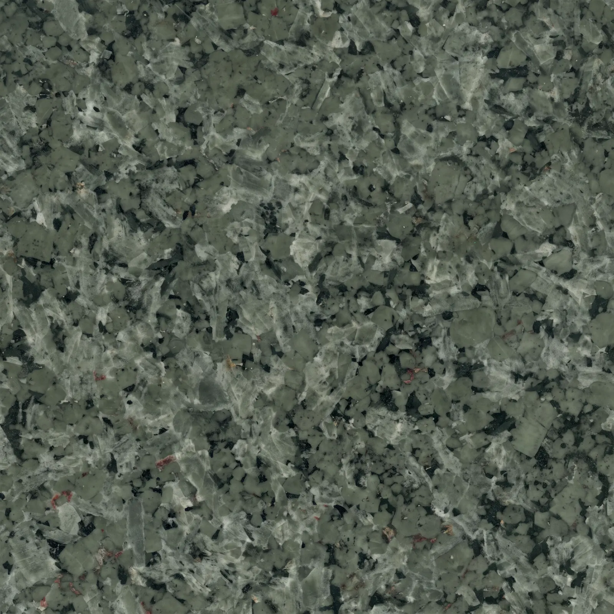
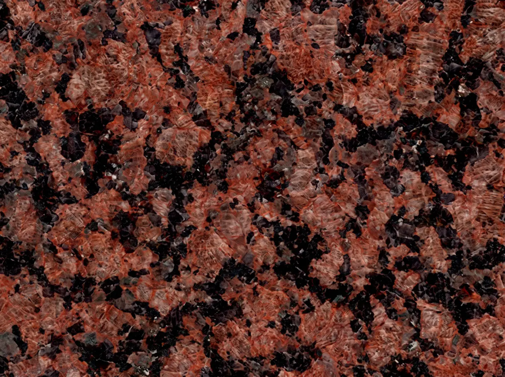

Плотность
Нужна для массы партии. Точный расчёт — в калькуляторе.
Каталог
18 пород оптом от производителя. На странице камня — свойства, фактуры, гравировка и применение. Изготовим под ваши размеры, партия под машину.

Карельский габбро-диабаз (известный также как Karelian Black или Другорецкий габбро-диабаз) — это не просто природный камень, а мировой эталон качества среди темных магматических пород.
3050–3250 кг/м³

Гранит Калгуваара (Red Kalguvaara) — это воплощение мощи и природной эстетики Карелии.
2630–2680 кг/м³

Гранит Дядина Гора (Dyadina Gora) — это не просто строительный материал, а настоящее произведение природного искусства.
2650–2700 кг/м³

Онежский лабрадорит (Onega Labradorite) — это не просто природный камень, а редкий феномен, объединяющий суровую мощь карельских недр с завораживающей игрой света.
2680–2750 кг/м³

Гранит Возрождение (Vozrozhdenie) — это один из самых востребованных серых гранитов Северо-Западного региона России.
2650–2700 кг/м³

Гранит Мавара (Mavara) — это благородный представитель карельской палитры, обладающий глубоким шоколадно-коричневым цветом и выразительной порфировидной текстурой.
2650–2720 кг/м³

Гранит Дымовский (Dymovsky), известный также как Балтийский или Елизовский, — это самый узнаваемый и массовый отечественный коричневый гранит.
2710–2740 кг/м³

Кольский габбро-диорит (Kola Gabbro-Diorite) — это уникальный природный камень, сформированный суровыми условиями Заполярья.
2800–2950 кг/м³

Гранит Онего Грин (Onego Green) — это редкий представитель ультраосновных пород, сочетающий в себе глубокий темно-зеленый цвет, исключительную прочность и заполярную морозостойкость.
3000–3150 кг/м³

Гранит Винга (Vinga) — это изысканный представитель карельской палитры, воплощающий мягкость и благородство северной природы.
2650–2700 кг/м³

Габбро-норит Хауки (Hauki) — это благородный темно-серый камень из Карелии, занимающий особую нишу среди карельских габброидов.
2900–3050 кг/м³

Гранатовый амфиболит (Garnet Amphibolite), известный также как Нигрозеро или Nordic Light, — это эксклюзивный метаморфический камень с уникальным контрастным рисунком.
2670–2850 кг/м³

Гранит Купецкий (Kupetsky), известный также как Купеческий, — это благородный карельский камень с глубокой коричнево-бурой и терракотово-розовой гаммой.
2650–2720 кг/м³

Гранит Black Galaxy (Блэк Галактика), известный также как Star Galaxy или Галактика Голд, — это один из самых узнаваемых и востребованных премиальных камней в мире.
2850–2950 кг/м³

Хибинит (Khibinite), известный также как Хибинский гранит или Зелёный хибинит, — это редкий коллекционный камень с уникальной фисташково-оливковой гаммой.
2600–2670 кг/м³

Красногорский гранит (Krasnogorsky) — это выразительный представитель карельских пород с благородным розовато-коричневым, терракотовым и красновато-серым оттенком.
2660–2720 кг/м³

Пироксенит Сопка Бунтина (Green Ray, «Зеленый луч») — это редкий и эксклюзивный камень из Заполярной Карелии, обладающий уникальным оптическим эффектом.
3030–3065 кг/м³

Гранит Кашина Гора (Kashina Gora) — это универсальный карельский камень с благородной розовато-серой и бежево-серой гаммой.
2640–2690 кг/м³
Нужна для массы партии. Точный расчёт — в калькуляторе.
Значение F указано в карточке породы.
Прямой портрет уверенно читается на габбро-диабазе, Хауки и кольском габбро-диорите.
Полировка для цвета, термообработка для улицы, где поверхность не должна скользить.
Выберите породу и размеры плиты в калькуляторе.